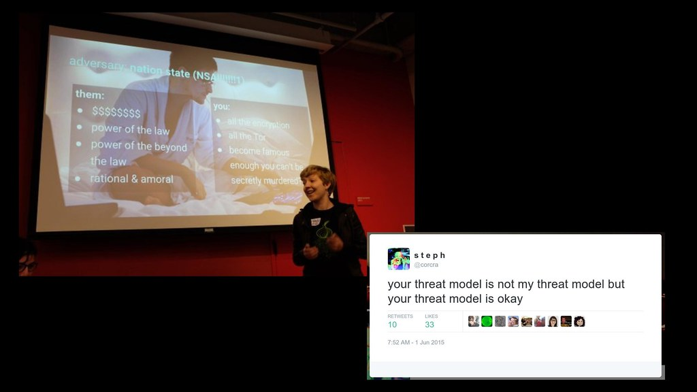

Threat Model

safeboot intends to protect the integrity of the boot process and
runtime integrity of the system against adversaries with external physical
access to the device, as well as limited internal physical access.
The assumption is that the attacker can get code execution on the device
as the user and as root, but does not have access to the signing keys or
the disk encryption key. The goal is to prevent the attacker from exfiltrating
data from the device or making persistent changes to the system configuration.
The protections offered by UEFI Secure Boot
fall short of these goals in several areas. The default signing keys in
Secure Boot are not under control of the computer owner -- the bootloader
root CA keys are controlled by Microsoft, who signs the keys used to sign
the shim bootloader, which has the Linux distribution keys built in.
Owners can enroll their keys to the Machine Owner Key (MOK), but this does
not replace the distribution keys in the shim. Even with SecureBoot enabled,
most distributions still go through grub for a boot menu, which increases
the attack surface and adds another layer of validation that needs to be done.
Finally, Canonical signs the kernel and the kernel modules so that they are
accepted by the shim and grub, but the initrd is unsigned and an attacker can
replace it without too much difficulty since it is stored in plaintext
on the disk. Additionally, none of the Linux distributions support TPM
protected keys out of the box, which is why it is necessary to install
a package like safeboot to make use of them.
Protections
The protections that are applied by the /usr/sbin/safeboot script and
setup instructions include:
Firmware
- Enabling UEFI Secure Boot, Supervisor password, Tamper Switches, etc
- Generating an owner controlled signing key in a hardware token
- Installing the owner's signing key as the UEFI Secure Boot Platform Key (
PK) - Removing OEM and Microsoft keys from the UEFI Secure Boot key database (
db) - Signing the kernel, initrd and command line with the owner's hardware key
Booting
- LUKS block device encryption on
/,/home,/varand swap. - TPM Sealing the disk encryption key with the UEFI firmware and configuration values
- The TPM sealed secret can be protected with a PIN
- The TPM sealed secret can be protected from rollback with a TPM counter
- If unsealing fails, attesting to the firmware state with TOTP and using a recovery key
- Storing the unsealed key in a protected kernel keyring and logging
- Enabling
intel_iommu=onandefi=disable_early_pci_dmato eliminate some hardware attacks
Runtime
- Enabling
lockdown=confidentialitymode to prevent root from accessing keyrings or memory - Mounting the root filesystem read-only and marking the block device read-only
- Enabling dmverity hash checking on the root filesystem ("SIP" mode)
- Mounting
/tmp,/homeand/varwithnosuid,nodev - Removing Canonical's module signing key
- Adding
usb-storageand other external media to the kernel module deny list - Proving the firmware and kernel configuration to remote attestation servers with
tpm2-attest
Todo
- TODO: Flush encryption keys during sleep
- TODO: VPN config
- TODO: Prevent network reconfiguration
- TODO: Device VM separation
- TODO: Separate
/homeencryption - TODO: Multiparty signatures for higher assurance
- TODO: Allowed list of USB device IDs.
The behaviour of things like the tamper switches and supervisor password are as observed on the Lenovo X1 firmware (and some were fixed after reporting vulnerabilities to Lenovo); other devices may vary and have less secure behaviour.
Attacks
These changes protect against many local physical and software attacks.
Physical hardware attacks
A local attacker with physical access to the device can open the device to gain access to the drive, the SPI flash on the mainboard, the Management Engine and CPU chipset, the discrete TPM device, the RAM chips, PCIe buses (such as m.2 slots), etc.
-
Opening the case to modify the flash or modify devices will trip the case tamper switch and prevent the device from booting until the firmware supervisor password is entered. This detects several classes of "evil maid" attacks that require physical access.
-
Removing the disk to attempt to rewrite it or image it for offline attacks will trigger both the case tamper switch and the disk tamper switch. The firmware supervisor password is required to reboot, which will allow the user or administrator to detect that the device has been compromised.
-
On Lenovo's recent firmware, the supervisor password is not stored in the SPI flash (Serial Peripheral Interface), but in the Embedded Controler (EC), and changing it requires the EC to validate the change. This prevents a local attacker from modifying the NVRAM variabels in the SPI flash to bypass the supervisor checks. However, the EC is an open field of security research.
-
On Lenovo's recent firmware, the tamper switch state is stored in the EC, rather than the RTC RAM. This makes it more difficult to bypass the tamper switches since an EC or Bootguard attack is necessary.
-
Exploits against the ME are unlikely to be detectable, although they require a level of expertise to pull off and do not provide persistence. A local attacker could use this to bypass Bootguard and other TPM provided protections. If they also know the TPM PIN and
/homeencryption password, they can exfiltrate data, but are unlikely to be able to gain persistence without the attack device in place due to the signed dmverity hashes. -
Changing the firmware in the SPI flash should be detected by Intel Bootguard's verification of the IBB during boot up and result in the device not booting. There are public TOCTOU attacks against Bootguard, so a local attacker can bypass the measured root of trust to boot their unsigned firmware and kernel. As with the ME attacks, if the TPM PIN and
/homeencryption key are known then data can be exfiltrated, but this does not provide persistence. -
Writing new platform keys in the SPI flash will result in a TPM unsealing failure since the UEFI secure boot configuration is part of the measured state included in the TPM PCRs.
-
An attack that presents a fake recovery key input dialog can be detected by the
tpm2-totptool. The TPM2 will only generate the 30-second, 6-digit authentication code if the PCRs match the expected value and the administrator can verify it against their authenticator app. With TPM2, the HMAC is computed in the TPM itself, so the secret is never accessible to the operating system. -
The PCR values in the TPM are not "secret", so an adversary with physical access could directly wire to the TPM and provide it with the correct measurements to extend the PCRs to match the signed values. The user PIN is still necessary to unseal the secret and the TPM dictionary attack protections both rate-limit and retry-limit the attacker.
-
Discrete TPM tampering on the LPC bus is not necessarily detectable by this system; an adversary with unlimited internal physical access can also probe sealed secrets. If a TPM PIN is used then the secrets might be brute-forcable, but would require much longer internal access.
-
Functional TPM tampering is out of scope since the fTPM is an application running inside the Intel Management Engine, not a separate device, and the ME is the root of all trust in the system. An adversary with code execution on the ME is able to bypass all of the other platform protections (with maybe the exception of SGX enclaves, although this is not certain).
-
In a "Coldboot" attacks on the memory, an attack triggers a reboot in order to boot into their own kernel that doesn't clear memory. Since most of the old contents are still present, this custom kernel can read through memory to look for secrets. This attack is prevented by requiring valid owner signatures on any kernel, and could be additionally prevented by enabling Intel TXT with an enforced DRAM clear, although a physically proximate attacker can turn off those protections by modifying the NVRAM variables during the boot process.
-
In another variant of the coldboot attack, the attacker freezes the RAM chips with cooling spray, removes the physical memory modules and install them into a new system that the attacker controls and that is configured to not clear the memory on power up. This attack is not easily doable on the X1 since all of the RAM is soldered onto mainboard, but is possible against part of the memory on the T490 since it has some of its memory soldered and some on a DIMM. TODO: Can Linux restrict the keys to the hard soldered chips?
-
The encryption keys are stored in RAM even while the system is asleep, which makes the keys potentially available to an attacker with certain resources; it would be worthwhile to consider flushing them prior to entering S3 suspend. This would require modifying the init scripts that handle resume to prompt for the password; the TPM sealed encryption keys are problematic since the TPM state is reloaded during a resume.
Physical software attacks
-
Modifying the unencrypted kernel or initrd on
/bootor attempting to pass in unapproved kernel command line parameters is prevented by the UEFI Secure Boot signature checks. The firmware will not hand control of the system to an unsigned EFI executable, which in this case is the entire kernel, initrd, and command line. This prevents both physical rewriting the disk in another machine, as well as if an attacker escallates to root and remounts/bootas read-write. -
The boot order NVRAM variable could be modified by an attacker with access to the SPI flash or if they have escallated to root. However, booting from an external device still requires an EFI executable signed by the PK/KEK/db, and since the default signing keys (typically the OEM and Microsoft) have been removed, only images signed the the computer owner's key will be booted from the external USB flash drive.
-
Adversaries might try to gain persistence or weaken security by gaining write access to the unencrypted
/bootpartition and changing the kernel images. This requires either a root escalation or a tamper switch bypass, but the firmware will deny them peristence by refusing to boot from the modified image since the signature is checked when they are loaded into RAM at boot. There should not be any runtime TOCTOU since the DRAM has been initialized and there is space to store the entire image prior to validating the signature. -
The adversary might roll back to a prior version of the signed kernel and initrd, with a prior signed version of the PCRs. This is prevented by using monotonic TPM counter in addition to the signature. When a security critical update is available, the TPM counter is incremented and the PCRs are signed with that new value. The TPM will refuse to unseal older sealed data since the counter no longer matches. The TPM counter should be protected against rollback since deleting and re-creating a counter does not reset it to zero, but instead to the highest value that any counter in the TPM has ever reached.
-
Adversaries might try to gain persistence by gaining write access to the encrypted and dmverity protected
/filesystem, which requires a kernel escalation since dmverity prohibits writes to the protected block device, or a tamper switch bypass in addition to possession of the TPM disk unsealing keys. However, even with write access, the adversary can not gain persistence since the signed kernel command line and signed initrd enable dmverity hash checking, which will detect any modifications to/. They would also need access to the signing keys to be able to produce a new valid root hash. -
An adversary might try to gain run time access to the disk encryption key. The PCRs are extended with the booted state so that the TPM will no longer unseal it after the initrd, and root is prevented from reading the key from the Linux kernel keyring, so a kernel escallation is required to gain access to it. TODO: qubes style separate VM for disk and user?
-
Some of the ports on the device, such as Thunderbolt and PCIe, have the ability to DMA in and out of main memory, which would allow a local attacker to connect a device that reads secrets out of unencrypted memory. The safeboot kernel commandline parameter configuration turns on the Intel IOMMU by default, as well as turns off PCIe bus-mastering, both of which should protect against attacks like Thunderspy as well as some classes of malicious devices on the Thunderbolt port or internal Mini-PCIe ports.
Software attacks
-
An attacker might try to exfiltrate data by plugging in a USB flash drive, which is prevented by adding
usb-storageto the deny list. The USB ports could also be turned off in the UEFISetup, although this would also prevent external keyboards and mice, if they are desired. -
An attacker with root access could try to load the USB storage module with
insmod /lib/modules/..../usb-storage.ko, which bypasses the/etc/modprobe.d/configuration. This can be prevented by removing the module from the root filesystem. -
An attacker with root access could download a version of the
usb-storagemodule from the Ubuntu website, which is signed by the Canononical key and can be loaded into a stock kernel since their key is in the default key ring. This is prevented by building a custom kernel with a module signing key that is not stored on the machine. -
An attacker with root access could try to
kexecinto a custom kernel that doesn't overwrite the disk encryption key and that doesn't enforce external device access. This is prevented by the Linux kernel lockdown mode (turned on by UEFI Secure Boot mode), which requires a signature on the new kernel by one of the keys in the UEFI Secure Boot key database, which only contains the public key of the hardware token used to sign the real kernel and initrd. -
An attacker with root access could try to bypass the module or
kexecsignature checks by opening/dev/memor otherwise directly poking into memory to enable the hardware to escalate into kernel mode. The Lockdown patches also disable access to the memory device and prevent root from being able to adjustioplor other special modes, which should make it more difficult for an attacker to escalate into kernel mode. -
An attacker with root access might try to use the Linux kernel keyring to read the disk encryption key. This is prevented by enabling
lockdown=confidentialitymode, which prevent all kernel memory accesses from user space, and also ensures that the keyrings are not accessible. The attacker would require an additional privilege escalation is required to turn off lockdown. -
An attacker might try to escalate to root by somehow creating device files or mounting filesystems with SUID binaries. The
/etc/fstabentries for/homeand/varare configured to not allow such executables. -
TODO: Prevent network reconfiguration that bypasses mandatory VPN.
-
TODO: ensure that the magic sysctl isn't allowed to bypass various security bits.
Todo
-
TODO: rollback attacks; how to use TPM counters to prevent them
-
TODO: Document rebuilding the kernel
-
TODO: configure allow/deny lists to clean up the module directories.
-
TODO: SELinux config
-
TODO: qubes/secureview separation
-
TODO: /home encryption
-
TODO: TPM PIN
-
TODO: tpm-totp
-
TODO: document how
tpm2-attesthandles access to remote resources